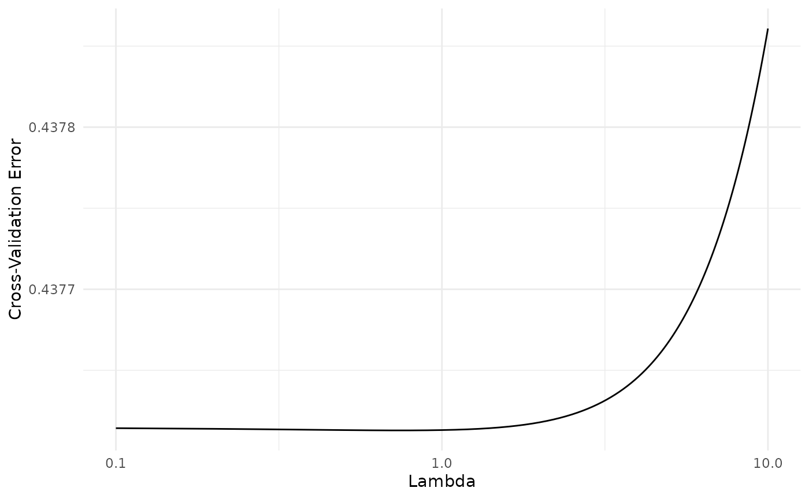

Introduction
Cette document explique comment utiliser le package
RidgeLeonFokou pour effectuer une régression Ridge sur un
ensemble de données. Le package fournit des fonctions pour ajuster un
modèle de régression Ridge, obtenir les coefficients estimés et faire
des prédictions sur de nouvelles données.
Installation
Avant de commencer, assurez-vous d’avoir installé le package
RidgeLeonFokou. Vous pouvez l’installer à partir de CRAN en
utilisant la commande suivante :
Introduction à la régression Ridge
La régression Ridge est une technique de régression linéaire qui ajoute une pénalité à la taille des coefficients pour éviter le surapprentissage. Elle est particulièrement utile lorsque vous avez un grand nombre de variables prédictives ou lorsque les variables sont fortement corrélées.
La formule de la régression Ridge est la suivante :
Utilisation du package RidgeLeonFokou
Pour créer un objet de régression Ridge, vous pouvez utiliser la
fonction ridge(). Cette fonction prend en entrée les
données d’entraînement et une ou plusieurs valeurs de pénalité (lambda).
Voici un exemple d’utilisation :
Données d’exemple
Dans le package RidgeLeonFokou, nous avons inclus un jeu
de données simulé pour illustrer l’utilisation de la régression Ridge,
appelé X, et une variable de réponse Y. Ces
données sont chargées automatiquement lorsque vous chargez le package.
Vous pouvez accéder à leur documentation en utilisant les commandes
suivantes :
?X
?YCréation d’un modèle de régression Ridge
Pour créer un modèle de régression Ridge, vous pouvez utiliser la
fonction ridge(). Voici un exemple d’utilisation de cette
fonction avec les données simulées X et Y
:
Présentation des variables du modèle
Le modèle de régression Ridge créé contient plusieurs variables importantes que vous pouvez utiliser pour analyser les résultats. Voici une brève description de ces variables :
-
ridge_model$betas: Les coefficients estimés du modèle de régression Ridge -
ridge_model$lambda_grid: La ou les valeurs de la pénalité utilisée pour ajuster le modèle -
ridge_model$X: Les données d’entrée utilisées pour ajuster le modèle -
ridge_model$Y: La variable de réponse utilisée pour ajuster le modèle -
ridge_model$cv_results: Les résultats de la validation croisée pour les différentes valeurs de la pénalité (lambda) -
ridge_model$ideal_lambda: La valeur de la pénalité idéale pour le modèle (c’est a dire la valeur de lambda qui minimise l’erreur de validation croisée) -
ridge_model$min_cv_error: L’erreur de validation croisée minimale obtenue pour le modèle ajusté -
ridge_model$name: Le nom du modèle de régression Ridge ajusté -
ridge_model$n_folds: Le nombre de plis utilisés pour la validation croisée lors de l’ajustement du modèle
Pour accéder à toute la liste des variables du modèle, vous pouvez
utiliser la fonction names() sur l’objet du modèle :
names(ridge_model)
#> [1] "X" "Y" "lambda_grid" "n_folds" "cv_results"
#> [6] "ideal_lambda" "min_cv_error" "betas" "name"Il est a noter que ce modele de régression Ridge est ajusté en
utilisant la validation croisée pour sélectionner la meilleure valeur de
la pénalité (lambda) parmi les valeurs fournies dans
lambda_grid. Il est toutefois possible de fournir une seule
valeur de pénalité (lambda) pour ajuster le modèle, mais dans ce cas, la
validation croisée ne sera pas effectuée et la valeur de la pénalité
fournie sera utilisée pour ajuster le modèle.
Quelques fonctions utiles pour l’analyse du modèle
Le package RidgeLeonFokou fournit également plusieurs
fonctions utiles pour analyser le modèle de régression Ridge ajusté.
Voici quelques-unes de ces fonctions :
Affichage des informaitions du modèle
Vous pouvez afficher les informations du modèle de régression Ridge
ajusté en utilisant la fonction print(). Cette fonction
prend en entrée l’objet du modèle de régression et affiche les
informations importantes de l’objet du modèle. Voici un exemple
d’utilisation de cette fonction :
print(ridge_model)
#> Object Ridge
#> Nom: ridge_model_example
#> Nombre de predicteurs: 4
#> Nombre d'observations: 1000
#> Domaine de Lambda : [0.1, 10] avec 100 valeurs et pas de 0.099
#> Lambda optimal obtenu par validation croisee: 0.7
#> Erreur de validation croisee minimale: 0.4376129
#> Nombre de folds pour la validation croisee: 5Prédiction sur de nouvelles données
Vous pouvez faire des prédictions sur de nouvelles données en
utilisant la fonction predict(). Cette fonction prend en
entrée l’objet du modèle de régression et les nouvelles données sur
lesquelles vous souhaitez faire des prédictions. Voici un exemple
d’utilisation de cette fonction :
# Créer de nouvelles données pour la prédiction à partir des données simulées
new_data <- X[1:5, ] # Utiliser les 5 premières observations
predictions <- predict(object = ridge_model, X = new_data)
head(predictions)
#> [,1]
#> 1 78.8706094
#> 2 0.8430522
#> 3 21.2870103
#> 4 38.5205570
#> 5 16.3690422
#> 6 96.8250517Il est tout a fait possible de faire des prédictions sur de nouvelles
données en utilisant la fonction predict(). Il suffit juste
de fournir l’objet du modèle de régression et les nouvelles données sur
lesquelles vous souhaitez faire des prédictions. VOici un exemple
d’utilisation de cette fonction :
# Créer de nouvelles données pour la prédiction à partir des données test
# Faire attention à la dimension des nouvelles données, elles doivent
# correspondre à la dimension des données d'entraînement utilisées
# pour ajuster le modèle.
new_data <- c(1, 2, 3, 4)
predictions <- predict(object = ridge_model, X = new_data)
head(predictions)
#> [,1]
#> 1 78.8706094
#> 2 0.8430522
#> 3 21.2870103
#> 4 38.5205570
#> 5 16.3690422
#> 6 96.8250517Si par contre aucune donnée n’est fournie, la fonction
predict() retournera les prédictions sur les données
d’entraînement utilisées pour ajuster le modèle. Voici un exemple
d’utilisation de cette fonction sans fournir de nouvelles données :
Visualisation des erreurs de validation croisée
Vous pouvez visualiser les erreurs de validation croisée pour
différentes valeurs de la pénalité (lambda) en utilisant la fonction
plot(). Cette fonction prend en entrée l’objet du modèle de
régression. Voici un exemple d’utilisation de cette fonction :
plot(ridge_model)